전기기능사 (2014-04-06 기출문제)
1과목: 전기 이론
1. 어떤 회로의 소자에 일정한 크기의 전압으로 주파수를 2배로 증가시켰더니 흐르는 전류의 크기가 1/2로 되었다. 이 소자의 종류는?
- 저항
- 코일
- 콘덴서
- 다이오드
(정답률: 60%)

2. 어떤 콘덴서에 V(V)의 전압을 가해서 Q(C)의 전하를 충전할 때 저장되는 에너지(J)는?
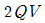
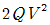
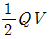
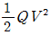
(정답률: 62%)
3. 진공 중의 두 점전하 Q1(C), Q2(C)가 거리 r(m)사이에서 작용하는 정전력(N)의 크기를 옳게 나타낸 것은?
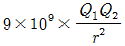
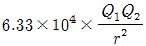
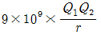
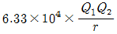
(정답률: 79%)
4. 진공 중에서 10-4C과 10-8C의 두 전하가 10m의 거리에 놓여 있을 때, 두 전하 사이에 작용하는 힘(N)은?
- 9×102
- 1×104
- 9×10-5
- 1×10-8
(정답률: 69%)
5. 다음 중 자기작용에 관한 설명으로 틀린 것은?
- 기자력의 단위는 AT를 사용한다.
- 자기회로의 자기저항이 작은 경우는 누설 자속이 거의 발생되지 않는다.
- 자기장 내에 있는 도체에 전류를 흘리면 힘이 작용하는데, 이 힘을 기전력이라 한다.
- 평행한 두 도체 사이에 전류가 동일한 방향으로 흐르면 흡인력이 작용한다.
(정답률: 40%)
6. 도체가 운동하여 자속을 끊었을 때 기전력의 방향을 알아내는데 편리한 법칙은?
- 렌츠의 법칙
- 패러데이의 법칙
- 플레밍의 왼손법칙
- 플레밍의 오른손법칙
(정답률: 49%)
7. 교류회로에서 무효전력의 단위는?
- W
- VA
- Var
- V/m
(정답률: 76%)
8. Δ 결선으로 된 부하에 각 상의 전류가 10A 이고 각 상의 저항이 4Ω, 리액턴스가 3Ω이라 하면 전체 소비전력은 몇 W인가?
- 2000
- 18000
- 1500
- 1200
(정답률: 53%)
9. 선간전압 210V, 선전류 10A의 Y결선 회로가 있다. 상전압과 상전류는 각각 얼마인가?
- 121 V, 5.77 A
- 121 V, 10 A
- 210 V, 5.77 A
- 210 V, 10 A
(정답률: 65%)
10. 회로에서 a-b 단자간의 합성저항(Ω) 값은?
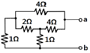
- 1.5
- 2
- 2.5
- 4
(정답률: 60%)
11. 동일 전압의 전지 3개를 접속하여 각각 다른 전압을 얻고자 한다. 접속방법에 따라 몇 가지의 전압을 얻을 수 있는가? (단, 극성은 같은 방향으로 설정한다.)
- 1가지 전압
- 2가지 전압
- 3가지 전압
- 4가지 전압
(정답률: 73%)
12. 그림의 브리지 회로에서 평형이 되었을 때의 Cx는?
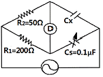
- 0.1 μF
- 0.2 μF
- 0.3 μF
- 0.4 μF
(정답률: 77%)
13. 그림에서 폐회로에 흐르는 전류는 몇 A인가?
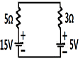
- 1
- 1.25
- 2
- 2.5
(정답률: 66%)
14. 비사인파 교류회로의 전력성분과 거리가 먼 것은?
- 맥류성분과 사인파와의 곱
- 직류성분과 사인파와의 곱
- 직류성분
- 주파수가 같은 두 사인파의 곱
(정답률: 47%)
15. 서로 다른 종류의 안티몬과 비스무트의 두 금속을 접속하여 여기에 전류를 통하면, 그 접점에서 열의 발생 또는 흡수가 일어난다. 줄열과 달리 전류의 방향에 따라 열의 흡수와 발생이 다르게 나타나는 이 현상은?
- 펠티어 효과
- 제벡 효과
- 제3금속의 법칙
- 열전 효과
(정답률: 76%)
16. 정전용량이 같은 콘덴서 10개가 있다. 이것을 직렬 접속할 때의 값은 병렬 접속할 때의 값보다 어떻게 되는가?
- 1/10로 감소한다.
- 1/100로 감소한다.
- 10배로 증가한다.
- 100배로 증가한다.
(정답률: 61%)
17. 묽은황산(H2SO4)용액에 구리(Cu)와 아연(Zn)판을 넣었을 때 아연판은?
- 수소기체를 발생한다.
- 음극이 된다.
- 양극이 된다.
- 황산아연으로 변한다.
(정답률: 56%)
18. 반지름 r(m), 권수 N회의 환상 솔레노이드에 I(A)의 전류가 흐를 때, 그 내부의 자장의 세기 H (AT/m)는 얼마인가?
- NI / r2
- NI / 2π
- NI / 4πr2
- NI / 2πr
(정답률: 71%)
19. 두 코일의 자체 인덕턴스를 L1(H), L2(H)라 하고 상호 인덕턴스를 M이라 할 때, 두 코일을 자속이 동일한 방향과 역방향이 되도록 하여 직렬로 각각 연결하였을 경우, 합성 인덕턴스의 큰 쪽과 작은 쪽의 차는?
- 1M
- 2M
- 4M
- 8M
(정답률: 63%)
20. 그림과 같은 자극사이에 있는 도체에 전류 (I)가 흐를 때 힘은 어느 방향으로 작용하는가?
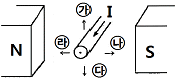
- 가
- 나
- 다
- 라
(정답률: 74%)
2과목: 전기 기기
21. 통전 중인 사이리스터를 턴 오프(turn off) 하려면?
- 순방향 Anode 전류를 유지전류 이하로 한다.
- 순방향 Anode 전류를 증가시킨다.
- 게이트 전압을 0 또는 -로 한다.
- 역방향 Anode 전류를 통전한다.
(정답률: 49%)
22. 직류발전기에서 급전선의 전압강하 보상용으로 사용되는 것은?(문제 오류로 2, 3번이 정답 처리된것 같습니다. 여기서는 3번을 누르면 정답 처리 됩니다. 자세한 내용은 해설을 참고하세요.)
- 분권기
- 직권기
- 과복권기
- 차동복권기
(정답률: 80%)
23. 3상 동기 발전기 병렬운전 조건이 아닌 것은?
- 전압의 크기가 같을 것
- 회전수가 같을 것
- 주파수가 같을 것
- 전압 위상이 같을 것
(정답률: 65%)
24. 동기발전기에서 비돌극기의 출력이 최대가 되는 부하각(power angle)은?
- 0°
- 45°
- 90°
- 180°
(정답률: 70%)
25. 3상 유도전동기의 1차 입력 60kW, 1차 손실 1kW, 슬립 3 %일 때 기계적 출력은 약 몇 kW인가?
- 57
- 75
- 95
- 100
(정답률: 60%)
26. 3상 100 kVA, 13200/200 V 변압기의 저압측 선전류의 유효분은 약 몇 A 인가? (단, 역률은 80%이다.)
- 100
- 173
- 230
- 260
(정답률: 31%)
27. 복잡한 전기회로를 등가 임피던스를 사용하여 간단히 변화시킨 회로는?
- 유도회로
- 전개회로
- 등가회로
- 단순회로
(정답률: 65%)
28. 동기 검정기로 알 수 있는 것은?
- 전압의 크기
- 전압의 위상
- 전류의 크기
- 주파수
(정답률: 49%)
29. 전기기계의 철심을 규소강판으로 성층하는 이유는?
- 동손 감소
- 기계손 감소
- 철손 감소
- 제작이 용이
(정답률: 71%)
30. 유도전동기에서 슬립이 가장 큰 경우는?
- 무부하 운전시
- 경부하 운전시
- 정격부하 운전시
- 기동시
(정답률: 56%)
31. 그림의 전동기 제어회로에 대한 설명으로 잘못된 것은?
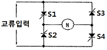
- 교류를 직류로 변환한다.
- 사이리스터 위상제어 회로이다.
- 전파 정류회로이다.
- 주파수를 변환하는 회로이다.
(정답률: 43%)
32. 다음 사이리스터 중 3단자 형식이 아닌 것은?
- SCR
- GTO
- DIAC
- TRIAC
(정답률: 52%)
33. 다음 중 정속도 전동기에 속하는 것은?
- 유도 전동기
- 직권 전동기
- 교류 정류자 전동기
- 분권 전동기
(정답률: 41%)
34. 직류 전동기의 출력이 50kW, 회전수가 1800rpm일 때 토크는 약 몇 kg·m 인가?
- 12
- 23
- 27
- 31
(정답률: 62%)
35. 다음 설명 중 틀린 것은?
- 3상 유도 전압조정기의 회전자 권선은 분로권선이고, Y결선으로 되어 있다.
- 디프 슬롯형 전동기는 냉각효과가 좋아 기동 정지가 빈번한 중·대형 저속기에 적당하다.
- 누설 변압기가 네온사인이나 용접기의 전원으로 알맞은 이유는 수하특성 때문이다.
- 계기용 변압기의 2차 표준은 110/220 V로 되어 있다.
(정답률: 55%)
36. 보호계전기 시험을 하기 위한 유의사항이 아닌 것은?
- 시험회로 결선 시 교류와 직류 확인
- 시험회로 결선 시 교류의 극성 확인
- 계전기 시험 장비의 오차 확인
- 영점의 정확성 확인
(정답률: 62%)
37. 변압기 명판에 표시된 정격에 대한 설명으로 틀린 것은?
- 변압기의 정격출력 단위는 kW이다.
- 변압기 정격은 2차 측을 기준으로 한다.
- 변압기의 정격은 용량, 전류, 전압, 주파수 등으로 결정된다.
- 정격이란 정해진 규정에 적합한 범위 내에서 사용할 수 있는 한도이다.
(정답률: 43%)
38. 전동기의 제동에서 전동기가 가지는 운동 에너지를 전기에너지로 변화시키고 이것을 전원에 환원시켜 전력을 회생시킴과 동시에 제동하는 방법은?
- 발전제동(dynamic braking)
- 역전제동(plugging braking)
- 맴돌이전류제동(eddy current braking)
- 회생제동(regenerative braking)
(정답률: 77%)
39. 직류발전기에서 자속을 만드는 부분은 어느 것인가?
- 계자철심
- 정류자
- 브러시
- 공극
(정답률: 65%)
40. 변압기의 규약 효율은?
- 출력 / 입력
- 출력 / (출력＋손실)
- 출력 / (입력＋손실)
- (입력-손실) / 입력
(정답률: 68%)
3과목: 전기 설비
41. 저압 옥내배선에서 애자사용 공사를 할 때 올바른 것은?
- 전선 상호간의 간격은 6㎝ 이상
- 440V 초과하는 경우 전선과 조영재 사이의 이격거리는 2.5cm 미만
- 전선의 지지점간의 거리는 조영재의 위면 또는 옆면에 따라 붙일 경우에는 3m 이상
- 애자사용공사에 사용되는 애자는 절연성·난연성 및 내수성과 무관
(정답률: 46%)
42. 제1종 가요전선관을 구부를 경우의 곡률 반지름은 관안지름의 몇 배 이상으로 하여야 하는가?
- 3배
- 4배
- 6배
- 8배
(정답률: 78%)
43. 가공배전선로 시설에는 전선을 지지하고 각종 기기를 설치하기 위한 지지물이 필요하다. 이 지지물 중 가장 많이 사용되는 것은?
- 철주
- 철탑
- 강관 전주
- 철근콘크리트주
(정답률: 61%)
44. 지중에 매설되어 있는 금속제 수도관로는 대지와의 전기 저항 값이 얼마 이하로 유지되어야 접지극으로 사용할 수 있는가?
- 1Ω
- 3Ω
- 4Ω
- 5Ω
(정답률: 60%)
45. 가공케이블 시설시 조가용선에 금속테이프 등을 사용하여 케이블 외장을 견고하게 붙여 조가하는 경우 나선형으로 금속테이프를 감는 간격은 몇 cm 이하를 확보하여 감아야 하는가?
- 50
- 30
- 20
- 10
(정답률: 47%)
46. 일반적으로 저압가공 인입선이 도로를 횡단하는 경우 노면상 시설하여야 할 높이는?
- 4m 이상
- 5m 이상
- 6m 이상
- 6.5m 이상
(정답률: 61%)
47. 저압 옥내간선 시설 시 전동기의 정격전류가 20A이다. 전동기 전용 분기회로에 있어서 허용전류는 몇 A이상으로 하여야 하는가?
- 20
- 25
- 30
- 60
(정답률: 51%)
48. 전기 배선용 도면을 작성할 때 사용하는 콘센트 도면 기호는?
(정답률: 85%)
49. 폭연성 분진이 존재하는 곳의 금속관 공사에 있어서 관 상호 및 관과 박스의 접속은 몇 턱 이상의 죔 나사로 시공하여야 하는가?
- 6턱
- 5턱
- 4턱
- 3턱
(정답률: 73%)
50. 다음 ( )안에 들어갈 내용으로 알맞은 것은?(오류 신고가 접수된 문제입니다. 반드시 정답과 해설을 확인하시기 바랍니다.)
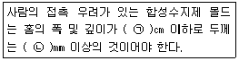
- (ㄱ) 3.5, (ㄴ) 1
- (ㄱ) 5, (ㄴ) 1
- (ㄱ) 3.5, (ㄴ) 2
- (ㄱ) 5, (ㄴ) 2
(정답률: 64%)
51. 인입 개폐기가 아닌 것은?
- ASS
- LBS
- LS
- UPS
(정답률: 57%)
52. 전선 접속시 사용되는 슬리브(Sleeve)의 종류가 아닌 것은?
- D형
- S형
- E형
- P형
(정답률: 56%)
53. 조명설계 시 고려해야 할 사항 중 틀린 것은?
- 적당한 조도일 것
- 휘도 대비가 높을 것
- 균등한 광속 발산도 분포일 것
- 적당한 그림자가 있을 것
(정답률: 61%)
54. 수변전 설비 중에서 동력설비 회로의 역률을 개선할 목적으로 사용되는 것은?
- 전력 퓨즈
- MOF
- 지락 계전기
- 진상용 콘덴서
(정답률: 64%)
55. 금속 전선관의 종류에서 후강 전선관 규격(㎜)이 아닌 것은?
- 16
- 19
- 28
- 36
(정답률: 76%)
56. 다음 중 금속덕트 공사의 시설방법 중 틀린 것은?
- 덕트 상호간은 견고하고 또한 전기적으로 완전하게 접속할 것
- 덕트 지지점 간의 거리는 3m 이하로 할 것
- 덕트의 끝부분은 열어 둘 것
- 저압 옥내배선의 사용전압이 400V 미만인 경우에는 덕트에 제3종 접지공사를 할 것
(정답률: 70%)
57. 다음 중 300/500V 기기 배선용 유연성 단심 비닐 절연 전선을 나타내는 약호는?
- NFR
- NFI
- NR
- NRC
(정답률: 49%)
58. 접지저항 저감 대책이 아닌 것은?
- 접지봉의 연결개수를 증가시킨다.
- 접지판의 면적을 감소시킨다.
- 접지극을 깊게 매설한다.
- 토양의 고유저항을 화학적으로 저감시킨다.
(정답률: 57%)
59. 가공전선로의 지지물에 시설하는 지선은 지표상 몇 cm까지의 부분에 내식성이 있는 것 또는 아연도금을 한 철봉을 사용하여야 하는가?
- 15
- 20
- 30
- 50
(정답률: 46%)
60. 저압 옥배내선 시설 시 캡타이어 케이블을 조영재의 아랫면 또는 옆면에 따라 붙이는 경우 전선의 지지점 간의 거리는 몇 m 이하로 하여야 하는가?
- 1
- 1.5
- 2
- 2.5
(정답률: 37%)